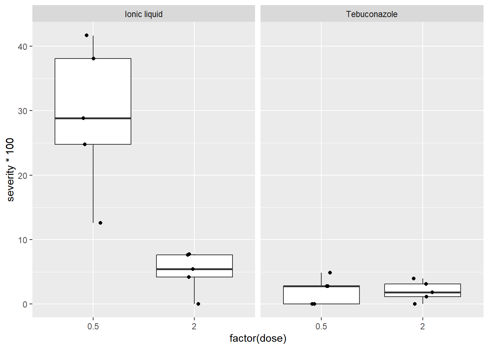

spray emmean SE df lower.CL upper.CL .group
C 1.24 0.181 66 0.883 1.61 1
E 1.81 0.181 66 1.447 2.17 12
D 2.16 0.181 66 1.802 2.53 2
A 3.76 0.181 66 3.399 4.12 3
B 3.88 0.181 66 3.514 4.24 3
F 4.02 0.181 66 3.656 4.38 3
Results are given on the sqrt (not the response) scale.
Confidence level used: 0.95
Note: contrasts are still on the sqrt scale. Consider using
regrid() if you want contrasts of back-transformed estimates.
P value adjustment: tukey method for comparing a family of 6 estimates
significance level used: alpha = 0.05
NOTE: If two or more means share the same grouping symbol,
then we cannot show them to be different.
But we also did not show them to be the same.
plot(simulateResiduals(InsectAnovaResult))
GLM com Distribuição Poisson
m4 =glm(count ~ spray, data = InsectsDataframe, family = poisson)plot(simulateResiduals(m4))
mediasM4 =emmeans(m4, ~ spray, type ="response")cld(mediasM4)
spray rate SE df asymp.LCL asymp.UCL .group
C 2.08 0.417 Inf 1.41 3.08 1
E 3.50 0.540 Inf 2.59 4.74 12
D 4.92 0.640 Inf 3.81 6.35 2
A 14.50 1.100 Inf 12.50 16.82 3
B 15.33 1.130 Inf 13.27 17.72 3
F 16.67 1.180 Inf 14.51 19.14 3
Confidence level used: 0.95
Intervals are back-transformed from the log scale
P value adjustment: tukey method for comparing a family of 6 estimates
Tests are performed on the log scale
significance level used: alpha = 0.05
NOTE: If two or more means share the same grouping symbol,
then we cannot show them to be different.
But we also did not show them to be the same.
check_model(m4)
ANOVA Fatorial com Interação (Fungicidas)
FungicideDataframe =gsheet2tbl("https://docs.google.com/spreadsheets/d/1bq2N19DcZdtax2fQW9OHSGMR0X2__Z9T/edit?gid=2023059672")# Boxplot por dose e tratamentoFungicideDataframe |>ggplot(aes(factor(dose), severity*100)) +geom_boxplot(outlier.color =NA) +geom_jitter(width =0.1) +facet_wrap(~treat)

MFungicide =lm(severity ~ treat * dose, data = FungicideDataframe)hist(residuals(MFungicide))
dose = 0.5:
treat emmean SE df lower.CL upper.CL .group
Tebuconazole 0.0210 0.0273 16 -0.03690 0.0789 a
Ionic liquid 0.2921 0.0273 16 0.23420 0.3500 b
dose = 2.0:
treat emmean SE df lower.CL upper.CL .group
Tebuconazole 0.0202 0.0273 16 -0.03768 0.0781 a
Ionic liquid 0.0501 0.0273 16 -0.00781 0.1080 a
Confidence level used: 0.95
significance level used: alpha = 0.05
NOTE: If two or more means share the same grouping symbol,
then we cannot show them to be different.
But we also did not show them to be the same.
treat = Ionic liquid:
dose emmean SE df lower.CL upper.CL .group
2.0 0.0501 0.0273 16 -0.00781 0.1080 a
0.5 0.2921 0.0273 16 0.23420 0.3500 b
treat = Tebuconazole:
dose emmean SE df lower.CL upper.CL .group
2.0 0.0202 0.0273 16 -0.03768 0.0781 a
0.5 0.0210 0.0273 16 -0.03690 0.0789 a
Confidence level used: 0.95
significance level used: alpha = 0.05
NOTE: If two or more means share the same grouping symbol,
then we cannot show them to be different.
But we also did not show them to be the same.
moisture = High moisture:
irrigation_type emmean SE df lower.CL upper.CL .group
Overhead 3.68 0.223 12 3.20 4.17 a
MS above canopy 3.99 0.223 12 3.51 4.48 a
MS 8.52 0.223 12 8.04 9.01 b
moisture = Moderate moisture:
irrigation_type emmean SE df lower.CL upper.CL .group
Overhead 3.81 0.223 12 3.33 4.30 a
MS above canopy 4.86 0.223 12 4.37 5.34 b
MS 11.18 0.223 12 10.70 11.67 c
Confidence level used: 0.95
P value adjustment: tukey method for comparing a family of 3 estimates
significance level used: alpha = 0.05
NOTE: If two or more means share the same grouping symbol,
then we cannot show them to be different.
But we also did not show them to be the same.
irrigation_type = MS:
moisture emmean SE df lower.CL upper.CL .group
High moisture 8.52 0.223 12 8.04 9.01 a
Moderate moisture 11.18 0.223 12 10.70 11.67 b
irrigation_type = MS above canopy:
moisture emmean SE df lower.CL upper.CL .group
High moisture 3.99 0.223 12 3.51 4.48 a
Moderate moisture 4.86 0.223 12 4.37 5.34 b
irrigation_type = Overhead:
moisture emmean SE df lower.CL upper.CL .group
High moisture 3.68 0.223 12 3.20 4.17 a
Moderate moisture 3.81 0.223 12 3.33 4.30 a
Confidence level used: 0.95
significance level used: alpha = 0.05
NOTE: If two or more means share the same grouping symbol,
then we cannot show them to be different.
But we also did not show them to be the same.